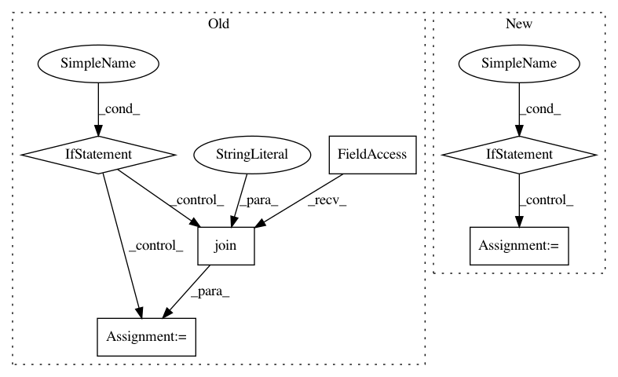

13023fca4b85442d58a0cb6321eac7048905466d,PyInstaller/hooks/hook-gi.repository.GdkPixbuf.py,,,#,25
Before Change
// To add support for a new platform, add a new "elif" branch below with the
// proper is_<platform>() test and glob for finding loaders on that platform.
if is_win:
pattern = os.path.join(
libdir, "gdk-pixbuf-2.0", "2.10.0", "loaders", "*.dll")
pattern2 = os.path.join(
libdir, "..", "lib", "gdk-pixbuf-2.0", "2.10.0", "loaders", "*.dll")
elif is_darwin or is_linux:
pattern = os.path.join(
libdir, "gdk-pixbuf-2.0", "2.10.0", "loaders", "*.so")
pattern2 = os.path.join(
libdir, "..", "lib", "gdk-pixbuf-2.0", "2.10.0", "loaders", "*.so")
// If loader detection is supported on this platform, bundle all detected
// loaders and an updated loader cache.
if pattern:
loader_libs = []
// Bundle all found loaders with this user application.
After Change
// To add support for a new platform, add a new "elif" branch below with the
// proper is_<platform>() test and glob for finding loaders on that platform.
if is_win:
ext = "*.dll"
elif is_darwin or is_linux:
ext = "*.so"
// If loader detection is supported on this platform, bundle all detected
// loaders and an updated loader cache.
if ext:
loader_libs = []
// Bundle all found loaders with this user application.
In pattern: SUPERPATTERN
Frequency: 3
Non-data size: 6
Instances
Project Name: pyinstaller/pyinstaller
Commit Name: 13023fca4b85442d58a0cb6321eac7048905466d
Time: 2018-03-13
Author: dustin@virtualroadside.com
File Name: PyInstaller/hooks/hook-gi.repository.GdkPixbuf.py
Class Name:
Method Name:
Project Name: 1adrianb/face-alignment
Commit Name: 4b1a4f9e0be8bc88ad627475e12381798d97470d
Time: 2020-12-13
Author: adrian@adrianbulat.com
File Name: face_alignment/detection/dlib/dlib_detector.py
Class Name: DlibDetector
Method Name: __init__
Project Name: 1adrianb/face-alignment
Commit Name: f90efe38fb0b1019e5bdc06b8a325aefe44893ea
Time: 2018-12-19
Author: bulat.adrian@gmail.com
File Name: face_alignment/detection/sfd/sfd_detector.py
Class Name: SFDDetector
Method Name: __init__